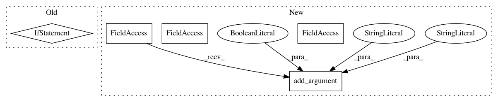

aeb516494daa207720b428072ab49eeea7bfff75,scripts/text_generation/sequence_sampling.py,,,#,33
Before Change
parser.add_argument("--temperature", type=float, default=1.0,
help="Softmax temperature used in sampling.")
args = parser.parse_args()
if not args.use_beam_search and not args.use_sampling:
parser.error("No decoding option specified. Add one of --use-sampling and --use-beam-search.")
print(args)
if args.gpu is None:
ctx = mx.cpu()
else:
After Change
// random sampler options
random_sample_parser = subparsers.add_parser("random-sample",
help="Use random sampling for decoding.")
random_sample_parser.add_argument("--temperature", type=float, default=1.0,
help="Softmax temperature used in sampling.")
random_sample_parser.add_argument("--use-top-k", type=int, required=False,
help="Sample only from the top-k candidates.")
// shared options
for p in [beam_search_parser, random_sample_parser]:
p.add_argument("--gpu", type=int, default=0,
In pattern: SUPERPATTERN
Frequency: 3
Non-data size: 5
Instances
Project Name: dmlc/gluon-nlp
Commit Name: aeb516494daa207720b428072ab49eeea7bfff75
Time: 2019-06-13
Author: xshiab@ust.hk
File Name: scripts/text_generation/sequence_sampling.py
Class Name:
Method Name:
Project Name: dmlc/gluon-cv
Commit Name: b7988369f77e12525604e2613b279c13f041f484
Time: 2019-12-04
Author: wuxun.zhang@intel.com
File Name: scripts/pose/simple_pose/validate.py
Class Name:
Method Name:
Project Name: tensorlayer/tensorlayer
Commit Name: 0f1fa8a1321837465d233ae43e2efcce1acf9262
Time: 2019-03-15
Author: jingqing.zhang15@imperial.ac.uk
File Name: examples/text_word_embedding/tutorial_word2vec_basic.py
Class Name:
Method Name: